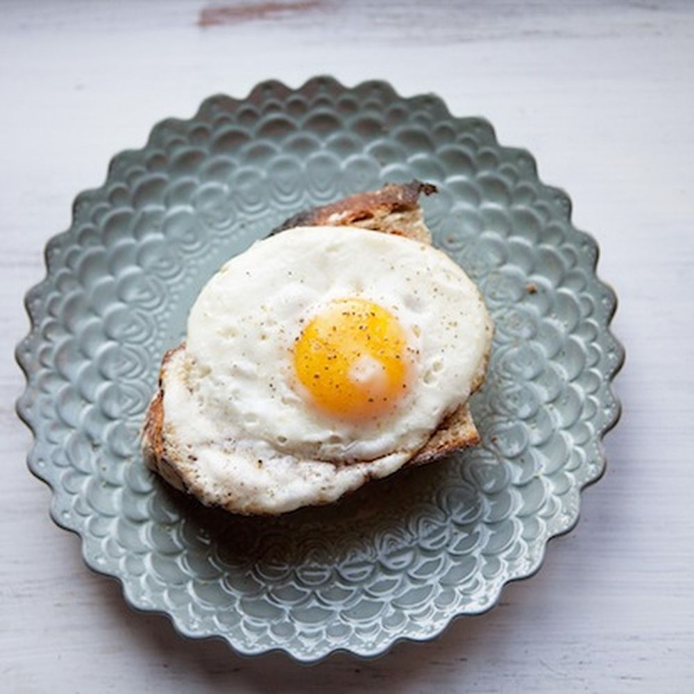

Eggs and Toast

Description
Nothing starts your day off right like a nice runny egg with a piece of crispy toast.
Ingredients
- Farm-fresh eggs
- Sourdough bread
- Smart Balance
- Salt
- Pepper
Steps
- Put olive oil in pan on medium heat
- Put toast in toaster
- Once oil is hot, crack three eggs into pan
- Let eggs sit until bubbly, then flip
- Season eggs
- After about a minute, put eggs on plate
- Spread Smart Balance on toast